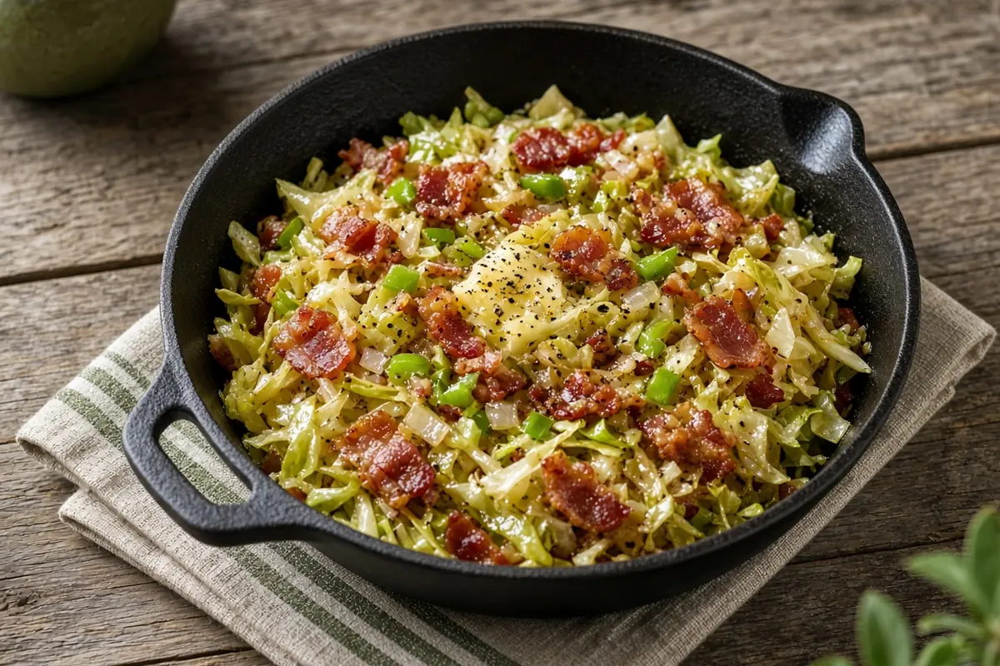

Southern Fried Cabbage with Bacon
Chopped cabbage fried slow with bacon, onion, bell pepper, and butter until tender and sweet, seasoned simply with seasoned salt and pepper.

Adapted from Allrecipes
6 servings
By
Yield: 6 servings
Prep:
Cook:
Total:
Difficulty: Easy
Ingredients
- 6 slices bacon, chopped
- 1 medium onion, chopped
- 1 green bell pepper, chopped
- 1 head cabbage, chopped
- 1/4 cup butter
- Seasoned salt, to taste
- Black pepper, to taste
Instructions
- Cook the bacon, onion, and bell pepper together in a large skillet over medium heat until the bacon is just starting to brown, about 10 minutes.
- Add the cabbage and butter and cook, stirring often, until the cabbage is tender and translucent, about 25 minutes.
- Season with the seasoned salt and black pepper and serve.
Notes: The saved recipe's steps used bacon, onion, and bell pepper but left them out of the ingredient list; the amounts here are added to match. A deep skillet or wide pot gives the cabbage room as it cooks down.